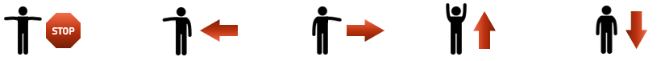

|
Recordings |
Webcam |
Keras Model |
|
How to use? |
|
| Move to a position where your webcam can see you in full size. Then move your arms as shown in the pictures on the right. The webcam will then automatically detect which movement you are doing. |  |
|
|
|

|
Debugging" |
| stop | |
| left | |
| right | |
| up | |
| down |